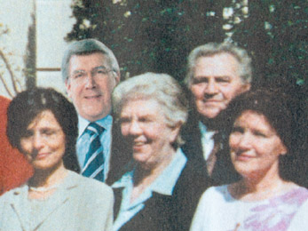

Schouppe verontschuldigd
vrijdag 9 mei 2003 | Actualiteit
Mensen uit Oost-Vlaanderen, neem zeker eens een kijkje in de algemene folder van de CD&V! Op de groepsfoto achteraan heeft iemand zwaar zitten foefelen met Photoshop. Echt grappig ;-)

Wouter Demuynck op 10 mei 2003
Ik merkte hetzelfde ook bij de groepsfoto's van andere partijen :)
Verder zag ik ook een reclaampje van spa/spirit waar de merknamen op een ontbijttafereel lichtjes aangepast werden. Je ziet duidelijk waar het over gaat, maar het staat er niet :)